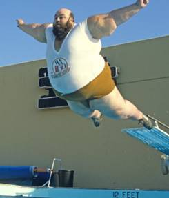

Table des
matières
Est-ce que je suis un joueur de dracaufeu
dans l’âme ?
Introduction
Musique
d’ambiance : https://www.youtube.com/watch?v=R2b04mYOPI8
Wesh, ici le professeur
Fire, aka Frite, Seb, attardé, et j’en passe. Si tu es ici frère, c’est
soit que t’es la copine de dany ( <3 ), soit que tu veux jouer Dracaufeu
(c’est un peu l’intérêt de la chose), soit que t’es un enculé qui se dit que
j’suis trop débile pour faire un guide, et tu viens vérifier si j’raconte pas
trop de conneries (coucou myo)
Bon bref, on ne
va pas s’attarder (faut que j’arrête avec ce mot) sur l’introduction longtemps.
Dracaufeu, vous le connaissez tous normalement, c’est un Pokémon de type
Feu/Vol issu de la première génération. Evolution finale du Pokémon de départ
emblématique des versions rouge et bleu, Salamèche, mis en avant dans l’anime à
de maintes reprises dans les combats les plus intenses, il est reconnu comme
étant l’un des pokémon que les fans aiment le plus. (Numéro 3 dans un sondage
que j’avais vu à l’époque, après Pikachu
et Mewtwo de mémoire).
Notre bon vieux
Sacha avait tendance à utiliser Dracaufeu comme un atout final, et c’était
souvent le Pokémon chargé de battre ceux que les autres membres de l’équipe
n’arrivaient pas à mettre au tapis (et c’est d’autant plus drôle que dans Smash
c’est un peu l’inverse, on sort + Dracaufeu pour la déconne et on laisse les
vrais matchs aux vrais persos, mais vous verrez ça dans la suite)
TL ;DR :
Dracaufeu soulève des daronnes partout sauf dans Smash
Vocabulaire
Un ptit recap du
vocabulaire au cas où t’es pas encore familier avec tous les termes que je
compte employer :
Edgeguard :
phase où l’on empêche l’adversaire de revenir
Advantage :
globalement, c’est lorsque l’on se trouve en dessous de l’adversaire (quand il
essaie d’atterrir en général), mais ça peut dépendre des personnages.
Les termes
techniques à savoir :
Dans certains cas, incliner le stick dans une
direction permet d’obtenir une variante de ce dernier. On rajoute alors la
direction utilisée en préfixe devant le nom de l’attaque : neutral,
forward, back, up, down.
Dans le cas d’un tilt par exemple, on aura le forward tilt (abrégé en Ftilt),
le uptilt (abrégé en Utilt) et ainsi de suite. Tu verras, on s’y habitue vite.
Même quand on est con. (j’en suis la preuve)
Jab : quand
on appuie juste sur A au sol sans toucher le joystick
Tilt : on
appuie sur A et on bouge doucement le stick dans une direction.
Air : coup
aérien. Egalement soumis aux directions (neutral air/nair, forward air/fair,
etc…)
B : les
coups spéciaux. Y’a deux écoles : ceux qui mettent la direction avant ou
après (neutral B/B neutral, UpB/Bup, DownB/Bdown). Par contre on dit rarement
« forward B », on a tendance à dire « Side B ». Me demandez
pas pourquoi, j’en ai aucune idée :doge :
Grab : quand
on attrape l’adversaire
Throw :
quand on lance l’adversaire. C’est sur ce terme qu’on donnera une direction
(Backthrow/bthrow, Upthrow/Uthrow, etc…). Pas de Upgrab ou jsais pas
quoi :doge :
Pummel :
quand on donne des coups pendant un grab en appuyant sur A
Vanadébat :
légendaire joute verbale lors desquelles le joueur Français Vanaheim prend plaisir à sortir des
arguments tirés par les cheveux pour être sûr que le débat restera stérile. A
éviter absolument.
D’autres trucs
aussi genre les DI mais j’ai vraiment la flemme d’expliquer, cherche sur
internet.
Pourquoi jouer dracaufeu ?
« Les joueurs de Dracaufeu, à l’image de leur
personnage, ont une énorme queue »
-Un visionnaire, 2018
Il y a des
avantages comme des inconvénients à jouer Dracaufeu. C’est à toi de te fixer
des objectifs concrets et d’être honnête avec toi-même quant à ces
derniers, parce qu’avec Dracaufeu, on ne fait pas tout ce qu’on veut !
(mon slogan)
Les
avantages :
-La classe. TOUT
LE MONDE aime Dracaufeu, c’est un fait. Y’a rien qu’à voir la hype quand
quelqu’un le sort (Anti, Elegant notamment), et à l’époque quand j’étais
considéré comme un challenger y avait bcp de gens que je ne connaissais pas qui
était pour moi. Un peu moins maintenant vu qu’en général on soutient moins les
tops et que les upsets c’est rigolo, mais si ils savaient à quel point jouer
dracaufeu à haut lvl c’est pas évident ils auraient un peu plus de compassion.
Personne devrait être fier de battre un joueur de Dracaufeu, vu comme il pue la
merde :loutre :
« Moi Dracaufeu jtrouve
pas ça si hype franchement, jveux dire ça fait tout le temps pareil alors que
Bayo elle est plus complexe et... »
->Ta gueule, Myo.
-C’est un perso
facile à prendre en main. De manière générale, votre Dracaufeu représente votre
niveau global sur Smash et est énormément axé sur le neutral game. C’est un peu
difficile de définir ce qu’est le neutral game à de jeunes joueurs et j’vais
pas m’y risquer sinon j’vais avoir Myo et la squad des relous sur le dos, alors
souvenez-vous juste que si vous êtes bon, vous êtes forcément un bon Dracaufeu,
et inversement.
-Il a (quand
même) des trucs utiles : des coups qui sortent relativement vite, une
recovery (capacité à remonter sur le stage) pas trop atroce (mais pas bonne non
plus faut pas DECONNER), un bon killpower (capacité à tuer vite), et
étonnement, il court vite (9ème perso le plus rapide du jeu,
moi-même j’en reviens pas)
Les
inconvénients :
-Il est nul
(j’vais le dire souvent tenez-vous prêt)
-Il a presque
aucune « gimmick » (sorte de capacité qui lui est propre) et donc de
fait il est très facile de comprendre comment il fonctionne, vous aurez du mal
à bénéficier d’un véritable effet de surprise. Quand on me demande des conseils
sur dracaufeu, jpeux résumer les connaissances essentielles du matchup en deux
phrases (et j’exagère pas) :
« airdodgez
pas après une downthrow »
« il faut DI
down away la downthrow de Dracaufeu, surtout pas IN sinon vous allez mourir bcp
plus tôt »
Mais bon après,
même ces deux conseils, tout le monde ne les met pas systématiquement en
pratique hein.
« Wesh tkt, j’ai dosé le MU dracaufeu avec Mana,
cette fois il se fera plus avoir »
-Dr « Greil » Hbb, quelques minutes avant que Mana ne fasse
une DI IN sur ma Uthrow
-en + d’être nul
il est extrêmement frustrant à jouer : on sent qu’il a été codé à la
pisse, et c’était pire avant. Vanilla Zard :jesus :
-Les joueurs de
dracaufeu sont des branleurs, et je pèse mes mots. Vous voyez le discord
shulk ? Ca fait des excels, ça lab des trucs improbables, c’est motivé de
ouf. Sur le discord dracaufeu, les gens préfèrent parler de ce qu’ils ont mangé
hier soir. Enfin, quand quelqu’un y parle :jesus :
« I don’t know »
-Réponse classique d’un joueur de dracaufeu quand on lui demande un truc
sur discord
Bon j’exagère un
peu mais vous comprenez : jouer dracaufeu c’est aussi ne pas se prendre la
tête. J’ai jamais tryhard de ma vie sur le jeu (surtout maintenant, ou je joue
une fois tous les 3 mois, en tournoi), mais je reste à un niveau correct. Les
frames, les locks etc, tous ces trucs, ça m’emmerde.
« Jmen tape de qui j’ai dans ma poule demain,
jpréfère regarder dragon ball »
-Fire, top 10 FR
Est-ce que je suis un joueur de dracaufeu
dans l’âme ?
Vous êtes un
potentiel joueur de dracaufeu si vous…
-N’aimez pas vous
prendre la tête
-Ne voulez pas
être le meilleur
-Voulez être
connu (bon plan)
-Vous avez pas
tellement de temps à mettre dans le jeu
-Vous aimez la
difficulté
-Vous voulez
juste passer le temps pendant que votre copain gagne des tournois (coucou
licia)
-Si Pokemon
origins vous donne des frissons
-aimez vous faire
enculer
-assumez pas
quand vous perdez (coucou moi)
-aimez quand les
gens vous aiment bien
-aimez rigoler
-aimez mériter
vos victoires
-n’aimez pas les
douilles
Si vous avez
répondu oui partout, alors vous êtes un parfait candidat pour jouer
dracaufeu ! Félicitations !!
Le personnage et son moveset
Musique
d’ambiance : https://www.youtube.com/watch?v=OzqsoBTRiXw
Bon, rentrons
dans le vif du sujet. Pour gagner du temps, j’appellerai Dracaufeu
« Zard », diminutif de Charizard, le nom anglais de notre pokémon
préféré.
Le personnage :
Comme je l’ai
déjà dit, zard est nul à chier, et fera pas votre travail à votre place. Va
falloir transpirer un peu pendant les matchs pour gagner. (J’ai déjà perdu tous
les joueurs de ZSS avec cette phrase)
Déjà une chose
importante, c’est qu’avec Zard, comme on pouvait s’y attendre avec ses ailes de
4m d’envergure et son type vol, est un personnage TERRESTRE. ( :jesus : )
Le sol est votre meilleur ami, Zard s’y déplace très vite et possède un moveset
qui centré autour du plancher. Mêmes ses coups aériens s’utilisent idéalement
près du sol, alors quittez-le le moins souvent possible. En l’air, Zard a une
des pires vitesses du jeu, et son petit saut en plus ne permet pas de compenser
la hauteur médiocre gagnée par ceux-ci. Du joli game design !!!
1 Un Dracaufeu qui s’élance dans les airs,
erreur de débutant
De manière
générale, les gros ont un disadvantage state horrible, c’est-à-dire qu’ils ont
souvent du mal à revenir sur le sol dès qu’on les expulse de leur zone de
confort. Malheureusement Dracaufeu ne fait pas exception à la règle et est de
la « combo food » pour tous les personnages doués pour empêcher
l’adversaire d’atterrir, et il faut mixer au maximum les techniques qu’on utilise
pour revenir. On verra ce qu’on peut faire un peu plus tard dans le guide.

2 Un gros en disadvantage state.. On se
demande comment il va atterir !!
Zard est dans la
catégorie « super heavy », la catégorie la plus élevée concernant le
poids, aux côtés de (du – lourd au + lourd) : Ganondorf, DDD, DK, Bowser,
ta mère.
Zard est 4ème
dans ce classement, ce qui fait de lui un perso difficile à éjecter. Enfin, ça
devrait être le cas, mais comme t’auras l’occasion de le voir, c’est pas
toujours vrai.
En effet,
Dracaufeu possède un ensemble de caractéristiques qui contribuent à le rendre
encore plus naze qu’il n’est déjà (et c’était pas chose aisée). J’aime appeler
ces caractéristiques « les spermeries de Dracaufeu », et tu verras
qu’elles n’ont pas volé ce titre. En gros :
-Dracaufeu
possède une gravité dégueulasse. La gravité permet de ralentir un personnage
envoyé verticalement, plus ta gravité est élevée, plus tu survis longtemps aux
coups verticaux. Autrement dit, Zard meurt bien plus vite vers le haut qu’il ne
devrait si l’on ne prend en compte que son poids, ce qui est d’une débilité
absolue. (c’est d’ailleurs pour ça que ddd survit plus longtemps verticalement
que Bowser malgré son poids plus faible)
-Dracaufeu est 1er
dans une liste !!!! Vous savez laquelle ???
C’est le personnage qui dépasse le plus
du rebord lorsqu’il est accroché à l’edge. Trop cool non ???
En effet (et je troll pas), Ganon peut carrément le Ganoncide en venant du
stage. Normal, vu que zard dépasse d’environ un rondoudou et demi. Fantastique.
-Il a failli
chopper une autre 1ere place : celle de la traction dégueulasse !! En
effet, zard possède la 2eme pire traction du jeu, juste derrière Luigi. La traction,
c’est ce qui permet à un adversaire de rester en place quand il shield un coup.
Autrement dit, quand Zard se prend un coup dans le shield il recule de 15 mètres, ce qui rend de
nombreuses punitions impossibles. Bravo le veau.
« Olala Ryu fastfall un peu moins vite que les
autres persos, ça me trigger tellement !! »
-Oursouzbek, main ryu manquant légèrement de recul
-Bon et une
airspeed dégueulasse, des hitboxes pas très catholiques sur beaucoup de coups
et d’autres encore. J’étalerai pas tout ici, mon but ce n’est pas de dégoûter
non plus. Vous l’aurez compris : pour jouer Dracaufeu, faut vraiment
s’accrocher.
« Accrochez-vous à vos chaussettes ! »
-Le chanteur du Pokérap, aux gens qui veulent
jouer Dracaufeu
Le moveset :
C tipar pour une
toute petite analyse des coups de Zard. Je parlerai rarement de % etc psk déjà
jles connais souvent pas et en plus on s’en tape. Je préfère vous dire quand
les utiliser.
Au sol :
Le jab :
Un des meilleurs
coups de Zard, sans déconner. Sors très vite (frame 4), bonne range (surtout le
3ème coup du jab, le coup d’aile, qui a une portée ASTRONOMIQUE.
Sert à se faire de l’air, à punir, à se défendre, à attaquer, à faire le café,
à faire vos factures, à sortir le chien, etc… (Liste non exhaustive)
Vous pouvez tenter des jabs cancels, c’est-à-dire arrêter l’enchaînement avant
d’arriver au 3ème coup pour placer un autre coup, le plus souvent un
grab ou un smash haut. Aucun jab cancel n’est véritable, l’adversaire peut
toujours réagir avant vous, il faut donc prendre le risque. Il peut être
intéressant de forcer l’adversaire à s’échapper en double saut pour le
récupérer un peu plus loin.
3 Un ptit jab cancel pour forcer
l'adversaire à sauter, et on va gentiment le ceuillir en Usmash
Le tip de Fire : parfois, quand vous commencez un jab et que votre
adversaire se situe un peu plus loin (qu’il soit en shield ou pas), hésitez pas
à aller jusqu’au jab 3. Ça surprend souvent (l’adversaire s’estime suffisamment
loin pour ne pas se faire toucher alors qu’il est en fait à portée du troisième
jab et lâche son shield pour vous punir. Et BAM, coup d’aile dans sa sale
gueule).
WARNING
Spermerie : Peut rater
tout seul. Fout l’adversaire juste derrière vous si le mec se prend une
certaine hitbox du jab, vous exposant à un punish (vous le méritez)
Le Ftilt :
Un bon coup de
queue brûlante dans la tronche, ça ne fait jamais du bien (pas que dans la
tronche, d’ailleurs). Le sweetspot (l’endroit où ça fait le + mal) est le bout
de la queue, et il est sincèrement assez costaud. Peut tuer à très haut%, tape
aussi loin que le 3ème jab. C’est un coup qu’il faut utiliser quand
l’adversaire se situe un peu trop loin pour le jab, mais on préfèrera ce
dernier quand ce n’est pas le cas (le Ftilt vous rend vulnérable à un punish,
vu qu’il prend du temps à se finir : il lag.) Je l’utilise quand je sais que je n’aurai pas le temps de
punir quelqu’un avec un dash grab mais qu’il n’est pas trop loin.
Le tip de Fire : Le Ftilt (comme beaucoup de Ftilts/Fsmashs dans ce
jeu) est orientable, c’est-à-dire
qu’on peut modifier son inclinaison en mettant le stick en diagonale. En plus
de rendre le coup + puissant, le Ftilt orienté vers le bas peut toucher les adversaires qui essaient de revenir,
ce qui peut s’avérer utile dans certains matchups comme contre Little Mac ou
Falcon. Le Downsmash a la même fonctionnalité, mais le Ftilt est +
optimal dans la mesure où il lag moins, vous rendant moins vulnérable. C’est
cependant + dur à maîtriser.
4Le Ftilt orienté vers le bas, pratique
pour edgeguard
Le Utilt :
Le Utilt est un
excellent anti air, qui empêche efficacement les gens d’atterrir. Il sort
extrêmement vite et ne lag pas beaucoup, ce qui en fait un outil de choix pour
mettre la pression sur un personnage situé sur une plateforme au-dessus de
vous. A bas % vous pouvez enchaîner sans pression un deuxième Utilt et/ou un
Usmash, ça fait pas mal de dégâts et ça a l’avantage de mettre l’adversaire
au-dessus de vous, une situation que Dracaufeu apprécie. Ça n’a cependant pas
beaucoup d’utilité dans le neutral (ouais jvais quand même le définir maintenant
sinon c galère, c genre quand vous êtes face à face avec l’adversaire, au sol
tous les deux) parce que la portée horizontale est à peu près égale à celle du
chibre d’un schtroumpf (toujours + grande que la tienne ceci dit).
Le tip de Fire : J’ai découvert assez récemment qu’il y avait quand
même moyen de l’utiliser quand vous êtes au sol avec votre adversaire, en effet
vous pouvez toucher votre ennemi avec s’il se trouve dans votre DOS et qu’il
est suffisamment grand (Ca marche sur Mewtwo et sur Falcon par exemple) .
C’est assez utile surtout quand on sait à quel point Zard galère quand
quelqu’un se trouve dans son dos.
Le Dtilt :
Un excellent
move ! Un bon compromis entre le jab et le Ftilt, il tape plus loin que le
jab 1 et 2 mais sort plus vite que le Ftilt, et lag beaucoup moins. Un de mes
coups préféré pour mettre la pression à un adversaire acculé au bord/à l’edge.
Une bonne portée, rapide, et tape assez fort. Que demander de plus ?
Par ailleurs, ce
coup possède une windbox, c’est-à-dire
qu’il « pousse » l’adversaire (un peu comme le uair de G&W). Ça
aurait pu être une spermerie mais pour le coup ça marche souvent dans notre
intérêt, en poussant un adversaire qui court vers vous, le faisant rater son
attaque. Et au pire ça donne des trucs qui font rire. Il est au moins bon à
quelque chose, Dracaufeu !
Le Fsmash :
Un coup de boule
qui n’a rien à envier à celui de Zidane, et qui fait 24% chargé au
max(notez-le, c’est important). On l’utilise quasiment pas en vrai, seulement
sur une grosse read d’airdodge vers le sol, ou sur n’importe quelle hardread.
Au milieu des jesaispas combien de frames que le coup dure (un bon paquet), il
y a TROIS frames d’invincibilité. Ça doit faire un an et 9mois que je joue zard
et ça m’a jamais sauvé la vie, mais sait-on jamais ? Avec beaucoup de
chance… . On préfère utiliser le bair en général, il s’utilise dans des
situations assez similaires pour une puissance presque identique, mais avec
beaucoup moins de lag et de startup (temps que prends le coup à se lancer).
Il est légèrement
disjoint, vous pouvez toucher un adversaire qui remonte sur le stage avec et
qui n’a plus d’invincibilité par exemple.
Le Usmash :
Mon coup préféré,
et en même temps celui que je déteste le plus je crois. Il est super fort, il
touche assez loin devant, il encule TOUS les aériaux du jeu si on le time bien
(même le Dair de Cloud) car les ailes sont INTANGIBLES (les ¾ de la queue
également, d’ailleurs [et constamment, pas que pendant ce coup]). L’anti air
ultime, et couplé à la vitesse de déplacement de zard au sol, cela fait de
dracaufeu un bon personnage pour chasser les adversaires essayant d’atterrir.
La premier coup soulève(vos daronnes), le deuxième tue. Vous pouvez parfois le
lancer dans le neutral, le risk reward est souvent intéressant. Il tue assez
vite d’ailleurs, ça sera probablement votre meilleur killmove.
En résumé :
empêche les gens d’atterrir, tue. Meilleur coup de Zard. Bite.
WARNING
Spermerie : Le Usmash a
tendance à rater tout seul. Vous touchez l’adversaire avec le premier coup,
mais le deuxième rate. Ça arrive souvent si l’adversaire est trop à l’arrière
de Zard, il tombe derrière vous. Dans ces cas-là c’est punish gratuit (vous
l’avez mérité).
Mais bon faut pas croire hein, il peut aussi rater quand vous touchez
l’adversaire devant vous. Lors de mon set face à Ixis au MARS 2017 mon Usmash avait raté de la sorte, parce
que j’avais trop de RAGE et que le premier coup a envoyé trop haut pour
permettre au deuxième de toucher. Triste.
Ca arrivera souvent, alors restez concentrés quand ça arrive, même quand ça
fout lseum.
5 "Ce qui différencie les bons
Dracaufeu des autres, c'est leur capacité à transformer un coup qui rate, en
coup qui réussit." -Voltaire
Le Dsmash :
Ce smash sert à
se faire de l’air, mais on préfère se retourner et jab, car il prend des
plombes à sortir. C’est utile contre certains coups cependant, par exemple
contre le Dair de Wario qui a tendance à mixup l’atterrissage. Un dsmash et ça
règle le problème (mais faut pas en abuser hein, c’est vraiment que dans
certains cas)
L’intérêt de ce
coup c’est qu’il touche assez bas pour toucher un adversaire qui remonte. C’est
pratique pour toucher Cloud, par exemple, en s’aidant du Lance-Flammes (Bneutre).
Le Bneutre
(Lance-Flammes/Flamethrower) :
Dracaufeu qui ne
cracherait pas du feu, ça serait un peu comme Bayonetta ou ZSS qui mériterait
une victoire : ça serait bizarre. Heureusement le monde est bien fait, car
pendant que les deux filles de joie volent des sets à droite à gauche,
Dracaufeu peut se servir de son Bneutre pour cracher des flammes. Dingue.
Le Bneutre est
beaucoup plus utile que ce que les gens pensent : il a de la portée, il
fait chier, il gratte les % et il est safe on shield. Cool. J’aime bien
l’utiliser quand l’adversaire est dos à l’edge, ça le force à sortir du stage
pour revenir, et ça donne une possibilité d’edgeguard.
Attention :
le feu provient de la bouche de zard. Si un adversaire est petit et
complètement collé à vous, le feu ne l’atteindra pas, et c’est le suuuuper
punish. Bon vous voyez ça me fait moins rager, parce que la hitbox visuelle est
la même que la hitbox active. C’est chiant, mais logique.
C’est très utile
contre certains persos dans le neutral, notamment contre harmonie, car pendant
qu’elle shield, ça brûle le luma hihi. Attention par contre, si l’adversaire
saute avant que vous lanciez le coup, il va vous mettre la chancla car vous
êtes vulnérable. Ça peut être sympa de le faire en sautant pour couvrir cette
option.
Le Bside (Boutefeu/Flareblitz)
Mon dieu mais ce
coup :jesus : une blague ambulante. Les noobs adorent le spammer ou
tenter des trucs genre des bthrow to Bside. Alors c’est vrai que c’est marrant,
mais si vous voulez être considéré comme un bon Dracaufeu, faites pas ça svp,
merci. Le coup VOUS met 5% à chaque lancement, et 10 de + si vous heurtez un
adversaire ou un mur. Dans ces deux derniers cas, vous êtes projetés au sol et
vous ne pouvez pas tech (appuyer sur R pour vous rétablir), et vos adversaires
peuvent vous mettre toute la misère du monde. Il n’y a que deux façons
d’utiliser ce coup :
La première (la
seule légitime) : pour revenir sur le stage. Si vous visez bien le rebord,
vous vous y accrochez sans subir les dégâts d’un impact, c’est ce que vous
voulez. Si vous visez trop bas vous vous éclaterez la gueule et vous serez
punissable (vous pourrez quand même remonter avec un upB), donc faites
attention. Dans des cas très particulier vous pouvez faire ça pour gagner du
temps, par exemple si vous n’avez plus l’invincibilité du ledge et que votre
adversaire y charge un smash. Faites attention quand vous remontez et rester
concentrez, l’armor (qui n’est pas censé se briser en dessous de 15% de
dommages) qui vous protège du knockback peut se casser toute seule sur des
trucs débiles (c’est déjà arrivé sur un navet de peach, et j’me suis SD parce
que mon cerveau a refusé d’admettre qu’une armure faite de flammes ardentes par
un dragon cracheur de feu pouvait perdre face au légume du jardin d’une
princesse blonde. Merci, Sakurai.
6 Dragon des flammes contre légume du
jardin, l'issue du combat va vous surprendre
La deuxième,
c’est en techase : quand vous projetez votre adversaire au sol à l’aide
d’un nair ou d’un dtilt, vous pouvez bourrer et Bside. Ça peut couvrir
plusieurs options si c’est bien exécuté. Cependant, cela peut vous retomber
dessus si vous ratez par contre, c’est à vos risques et périls (comme tout ce
que zard fait, d’ailleurs)
7 Ce genre de techase mamene
« Quand le peuple applaudira plus le UpB to Uair
d’un Sonic que la techase au Flareblitz d’un Dracaufeu, la fin du monde sera
proche. »
-Nostradamus, premier Dracaufeu main
Préparez les
bunkers.
Le Bup (Vol/Fly) :
Ce coup est une
farce. Y’a une super armor au début (si vous devez revenir de très loin vous
serez complètement vulnérable aux spike, pas la peine d’applaudir theflow quand
il me le fait dans ces conditions bande de teubés), ça va pas super haut.
Ca a le mérite de
tuer relativement vite, à utiliser pour punir quand quelqu’un frappe dans une
de vos airdodges, comme mixup yolo quand vous atterrissez, ou si vous êtes
convaincu que quelqu’un va attaquer, essayez de tanker le coup avec la super
armor et de le tuer ensuite.
Attention
Spermerie : Ce coup foire
souvent tout seul, c’est abusé :jesus : quand ça foire c’est punish
gratuit pour l’adversaire, ewi faut pas déconner ! Imaginez un personnage
qui tue parce que son Bup jank, ça serait abusé, non ????
8 POUBELLE
Attention
également : vous pouvez l’incliner en arrière. Il partira plus à la
verticale, mais il a encore moins de chance de fonctionner.
Le Bdown (Eclate-Roc/Rock Smash):
Le meilleur
special de Dracaufeu imo, mais soumis aux rng. Dracaufeu éclate un gros caillou
avec son crâne. Le coup en entier peut mettre entre 33 et 30%, ce qui en fait
le coup le + fort (en terme de %) de Zard, et peut être utile à placer après un
shieldbreak du coup (+ de dégat que le Fsmash, souvenez-vous). Par contre c’est
risqué, les éclats de cailloux volent dans des directions au hasard et vous ne
toucherez pas toujours avec. Par ailleurs ces cailloux font ce qu’ils veulent
et restent un petit moment après que le rocher ait explosé, si un adversaire
s’approche de vous par derrière/par au-dessus ça peut vous sauver, comme ça
peut vous laisser tomber (oui, un caillou peut-être projeté derrière Zard, mais
c’est rare).
« Putain ! »
-Vanaheim, exprimant sa frustration pour s’être pris un caillou à 3%,
tandis que je me remettais encore des 50 toupies et 27 lasers que je venais de
manger
Le point fort du
Rock Smash, outre ses % prodigieux, c’est sa super armor. Lorsque dracaufeu
sors le rocher jusqu’à ce qu’il le casse, il est entièrement protégé du
knockback des coups de l’adversaire. Cela en fait un excellent mixup quand vous
devez atterrir par exemple, faut vraiment pas hésiter à le balancer sans
pression sur l’adversaire.C’est souvent comme ça qu’on l’utilise, on peut de
temps en temps le balancer dans le neutral mais ça reste punissable, alors ne
le faites pas trop souvent ! D’ailleurs, les éclats de roche peuvent
shieldpoke (c’est-à-dire toucher une partie du corps non protégée par le
bouclier de l’adversaire).
Le tip de Fire : Du fait qu’il fasse énormément de %, il a tendance
à bien entamer le bouclier de l’ennemi, donc le réutiliser une deuxième fois
peu de temps après cassera le shield.
9 Y avait pas beaucoup de façons de rater
le punish mais vous pouvez compter sur Nin pour y arriver
Le tip de Fire 2 : J’avais trouvé une utilisation assez sympa et
originale du coup, essayez de l’utiliser quand votre adversaire est à l’edge.
Ca couvre toutes les options sauf la roulade, ça touche même si il reste
accroché trop longtemps, et ça l’enverra juste devant vous. Bien réalisé, vous
avez un fair qui est true juste
après. Le timing demande pas mal de
précision par contre, faut toucher avec les derniers cailloux, sinon l’ennemi
pourra airdodge/sauter. Bon par contre, vous pouvez read une airdodge par
exemple et placer un dair dont il se souviendra, donc n’hésitez pas à agir même
si vous sentez que vous êtes en retard !

10 Moi aussi j'ai des combos de batard,
salope
En l’air :
Le Nair :
Ah, le
nair ! Cousin germain du nair de Rob, il a des propriétés
similaires : il lag quasiment pas à la fin du move, vous permettant
d’atterrir avec, mais il peut aussi être utilisé pour comboter, car vous avez un avantage de frame si vous touchez avec
la fin du coup, un adversaire en dessous de vous par exemple. Vous pouvez
trouver un grab ou un jab quand l’adversaire est à très bas %, puis une dash
attack ou un fair, et enfin, si l’adversaire DI vers le bas vous pouvez tenter
la techase au flareblitz.
Ça prend un peu de temps pour réussir à bien savoir quoi faire après avoir
touché avec, mais on y arrive à force.
Vous pouvez
utiliser ce coup dans le neutral également, notamment en courant > vous
retournant > nair. Ca fait commencer le coup face à l’adversaire, c’est le
moment ou le nair a sa portée maximum et il sort plus vite. On préfère faire ça
avec des fairs d’habitude, mais le nair est un bon mixup et il empêche l’adversaire de passer au-dessus,
ce que le fair ne sait pas fair (mdr)
Le tip de Fire : Un combo un
peu débile mais qui a le mérite de fonctionner de temps en temps, c’est quand
vous poussez l’adversaire offstage avec un Nair et que vous descendez lui
mettre un Dair. C’est chaud à placer et c’est assez dangereux mais sur les
persos qui ont des recos pourries, ça se tente.
11 Presque aussi hype qu'un uair to knee
Le Fair :
Le meilleur
aerial de Zard, imo. Sort vite, fait mal, tue, a de la range… l’utiliser est
assez simple : vous voyez votre adversaire devant vous, vous êtes en
l’air, vous faites un fair. C tout con.
Mais
(heureusement), c’est pas la seule façon de fair (jpp). La meilleur utilisation
du move pour moi, c’est après un shorthop. C’est simple, si vous le faites
assez vite, vous ne subissez aucun lag à
l’atterrissage, et rien que ça, c’est une aide énorme dans le
neutral ! Les gens ont tendance à shield votre fair et à essayer de vous
punir juste après : vous reculez autant que possible une fois que vous
avez touché, puis vous agissez tout de suite en atterrissant (un jab ou même shield/spotdodge)
par exemple. C’est un peu difficile à faire au début, mais perséverez, ça en
vaut la peine. C’est un des meilleurs
outils de Dracaufeu et j’en voit pas
beaucoup qui le font, malheureusement. Si vous touchez avec ce fair d’ailleurs,
à bas % vous pouvez tenter d’enchaîner : c’est pas true, mais l’adversaire
shield souvent et c’est une porte ouverte pour un grab.
Le Fair est aussi
un excellent coup oos (out of shield, au moment où on lâche le shield). C’est
extrêmement utile dans certains match ups comme contre ZSS par exemple, contre
qui c’est parfois difficile de trouver une ouverture. Veillez cependant à sauter directement en gardant le
bouclier, car si vous lâchez puis vous sautez vous allez perdre des frames très
précieuses.

12 Un fair shorthop, l'outil de base
Le Uair :
On va passer
rapidement sur ce coup : souvenez-vous, avec dracaufeu, on préfère garder
le sol que venir chercher son adversaire en l’air. Ainsi, je préconise de
suivre votre adversaire depuis le terrain, puis de le chopper avec un Usmash ou
un Nair. Vous pouvez de TEMPS EN TEMPS tenter de venir chercher avec un uair,
mais vous risquez de perdre gros, alors réfléchissez-y à deux fois.
Il y a cependant
une catégorie de personnage contre lequel j’utilise le uair à outrance :
ceux qui possèdent plusieurs sauts. Ils ont tendance à se sentir intouchables
ces ptits batards, et nous narguent avec leurs sauts. Eh bien n’hésitez pas à
utiliser vos 3 sauts pour vous hisser à leur hauteur, à les surprendre et à
leur placer un bon ptit uair dans les gencives. Déjà vous prenez sûrement la
stock, mais en plus vous leur faite comprendre qu’ils ne sont pas aussi bien
dans les airs qu’ils le pensaient. C’est
extrêmement utile contre MK par exemple.
Pour les autres
personnages je le répèterai jamais assez : gardez le sol, ça vaut mieux
pour vous.
Le Dair :
Le spiiike !
Ça fait toujours du bien d’en placer un de temps à autre. Y’a pas vraiment de
façons universelles de le mettre donc jvais pas trop en parler ici :
sachez juste que c’est un excellent spike, il tape fort et la hitbox s’étend
jusqu’à son ventre. Si vous êtes sûrs que votre adversaire va airdodge, ou
qu’il va remonter à un endroit précis, hésitez pas à l’utiliser.
Le tip de Fire : Certaines circonstances sont plus favorables à
placer un spike que d’autres : quand vous réussissez à mettre votre
adversaire dehors sans son double saut notamment, ils ont tendance à vouloir
remonter directement et sont alors sujets à l’efficacité de leur upb :
rosa et falcon sont vulnérables, luigi a besoin de bien s’aligner avec le
rebord pour pouvoir upb, etc… Plus vous jouerez et plus vous serez capables de
repérer les situations ou le spike est possible.
Le Bair :
ZE LIT
BAIR :bave : jpense que j’ai pas trop besoin d’en parler, ce coup il
pèse presque autant que les muscles de Vanaheim. Combien de vies parties trop
tôt grâce à cause de ce coup ?
Une portée
faramineuse, une puissance devastatrice, pas autant de lag que ça. Bref ce coup
il faut l’utiliser, et pour être honnête je crois que c’est mon plus gros
défaut personnel : je l’utilise trop peu et trop
mal. :freecais :
Quand j’affronte
d’autres zard en ditto ça me choque limite de voir à quel point ils le
spamment, et à quel point je devrais exercer plus de pression avec. Rien que
Zard dos à qqun doit inspirer la peur et le respect. S’utilise pour punir les
airdodges mais aussi les spotdodges : une approche possible, vous courez,
vous vous retourner, l’adversaire croit à un grab et spotdodge, et bim, mort à
60. GG cp ?
Pensez bien à
reculer en le faisant, si vous tapez dans un shield normalement vous êtes safe.
Vous pouvez
parfois trouver un back air après un nair retourné d’ailleurs, faudra lire
l’airdodge mais les gens ont tendance à le faire dans cette situation.
Les throws :
La Fthrow :
Vous balancez le
mec devant vous. C’est genre, la Fthrow de base quoi :fake : . Ça a l’avantage
de sortir vite, à l’edge vous pouvez tuer des gens assez rapidement qui DI down
away en pensant que vous allez Uthrow (ce qui est débile d’ailleurs, vu le
temps que la Uthrow prend). Hésitez donc pas à l’utiliser quand vous choppez un
grab à l’edge.
La Uthrow(Frappe Atlas/Seismic Toss):
Ceux qui ont
regardé l’anime étant petit savent à quel point la version dans Smash ne lui
fait pas honneur. Dracaufeu finissait presque tous ses combats avec. Vous,
j’vais le dire direct, si vous tuez avec la Uthrow, c’est que vous avez mal fait votre boulot. Avec une DI optimale
(qui a le mérite d’être une DI intuitive en plus, les gens qui savent pas quoi
faire la DI souvent correctement), l’adversaire meurt à des % abusés, et vous
auriez déjà dû prendre cette stock avec un Usmash ou avec un Bair. Honte à
vous.
« La Uthrow elle va tuer là !!! »
-Un con qui pense que Dracaufeu est pas low tier
On rigole et
tout, mais c’est une des phrases que j’ai le plus entendu dans mon dos pendant
que je jouais. Qu’on se le dise : La
Uthrow tue toujours plus tard que ce qu’on pense. La seule et unique fois
où j’ai tué plus tôt que prévu sur une bonne DI c’était contre Meru au fortuna,
et j’étais le premier étonné.
13 Un poids léger, une plateforme, de la rage, une
Uthrow fraiche. Ca n'a pas tué. Mdr.
C’est d’ailleurs devenu un peu un meme dans ma tête, quand jvois genre un marth
ou amphinobi tuer avec sa throw jdis « Dracaufeu il tuait pas avec sa
uthrow là ». Quel perso de merde Dracaufeu :jesus :
« Mé non arrête de te plaindre, c un bon perso tu rages juste »
-Yosheroce, frustré d’avoir perdu
Jpense pas
pouvoir vous dire de trucs que vous ne connaissez pas sur cette throw en vrai.
Elle tue pas du tout sans rage, et tue plus tôt si vous parvenez à obtenir le
grab sous une plateforme.
14 En rouge, les endroits où je place 95% de mes
grabs à haut %
La Dthrow :
La throw la plus
importante. C’est celle qui permet de mettre des %, de créer des 50/50, de
respirer un coup. A bas % c’est elle qu’on cherche à placer pour punir, elle
permet de suivre avec plusieurs enchaînements :
Le Dthrow to
fair, la « classique »
La Dthrow to
Nair, la « trisomique » : j’aime bien faire ça moi, en fait ça
fait moins mal que le fair mais vous avez la possibilité d’enchaîner après si
vous arrivez à deviner ce que va faire votre adversaire. S’il saute cependant
vous ne pouvez pas enchaîner, mais vous vous retrouver dans une situation
d’avantage, ce qui est nous va parfaitement. Vous pouvez reverse le Nair pour
avoir le sweetspot (la flamme) du coup et faire le max de dégâts.
La Dthrow to
Uair, la « souple » (quand votre adversaire DI in)
La Dthrow to read
airdodge to spike/bair: si vous avez conditionné votre adversaire, vous pouvez
tenter de placer un spike ou un bair après une airdodge. Les bons joueurs
savent qu’il ne faut pas airdodge après la Dthrow de Dracaufeu, mais ça arrive
même aux meilleurs. (coucou Quik)
La Dthrow est une
ouverture sur un monde entier de possibilité, hésitez pas à tenter des trucs.
Vous pouvez faire un bair directement, j’avais pris une stock à Ramses de la
sorte au Fortuna, parce que j’avais remarqué qu’il attaquait systématiquement
après mes Dthrows, et que le Bair bat tous les aerials de Corrin.
Sur certains
persos, à certains % et sur certaines DI, la Dthrow to Fair/Uair peut tuer.
Bayonetta et Ike y sont les plus sensibles, de mon expérience.
Oh et j’ai
presque oublié : la Dthrow to Usmash . Ça marche à très bas %, et
c’est le combo garanti qui fait le plus de dégats (23%, contre 19% pour le
Dthrow fair). Par contre faut faire gaffe, y’a des persos sur qui ça marche
presque pas (Samus, notamment). Quand vous n’êtes pas sûrs, faites un Dthrow
fair !
La Bthrow :
C’est comme la
Fthrow mais dans l’autre sens :pig : elle envoie à peu près aussi
loin, à utiliser quand les combos Dthrow ne fonctionnent plus et que vous êtes
dos au rebord, pour vous créer une occasion d’edgeguard.
Le tip de Fire : Le Bthrow to bair est un true combo à très bas %,
mais ça marche beaucoup moins longtemps que le Dthrow. Le truc, c’est que dans
certains Mus ou l’edgeguard joue un rôle clé (Cloud, notamment), il peut être
intéressant de privilégier la Bthrow même si vous n’avez pas de fair après,
parce c’est plus important de le mettre dehors que de lui mettre des %.
Les stages
Musique
d’ambiance : https://www.youtube.com/watch?v=053CMsCnmHg
Ça va aller vite !!
Y’a pas de bon
stages pour dracaufeu. Y’en a pas de mauvais non plus.
Dracaufeu joue en fonction de l’adversaire. C’est vrai dans tous les
domaines, dans le jeu (on joue toujours la défense) comme dans le choix de
stage.
Battlefield aide
à atterrir et vous donne de l’espace, mais vous rend la Uthrow quasiment
obsolète
Dreamland est
mieux pour tuer vite, mais le vent est souvent chiant pour un perso qui a
besoin d’être posé comme zard
Smashville c’est
un peu ptit et c’est parfois difficile de s’y faire de l’air, mais le layout du
stage est pas handicapant (attention aux ledge, le flareblitz rebondit pas
dessus, si vous le fait trop bas c’est SD direct [coucou Rudy])
T&C :
C’est ptet le meilleur stage pour zard dans la mesure où on a beaucoup
d’espace, et que le Usmash et la Uthrow tueront avant. Par contre on peut s’y
faire camper assez facilement et c’est porte ouverte aux douilles de ZSS et
Bayo par exemple.
DF : Pas de
plateformes donc difficile d’atterrir, mais c’est aussi plus simple d’empêcher
les autres de le faire. Double tranchant.
Lylat : Bah
c’est Lylat quoi, prenez le contre les gens meilleurs que vous en espérant
qu’ils se suicident, y’a pas de secrets
Après y’a des
règles générales en fonction des matchups forcément. Evitez ABSOLUMENT DF
contre Sonic parce que le MU passe de « presque infaisable » à
« bite tourbillonnante dans ton cul », et éviter Lylat contre Bayo
(évitez de jouer contre Bayo aussi, il en va de votre santé mentale).
15 De mon intense réflexion sortira une des
idées les plus débiles de ma carrière smash
Les matchups
Voici ma MU
chart :
Je comptais à la
base étaler les Mus que je connaissais mais j’ai une flemme olympique. Sachez
juste que Dracaufeu niveau Matchup c’est assez atroce : vous apprendrez
vite à considérer les 45 :55 comme d’excellents matchups pour vous, et les
60 :40 comme des evens.
En plus d’être
dur, il y a des matchups qui sont particulièrement chiants. Roy et Falcon qui nous agressent la gueule et qui nous
tuent à 50 avec des coups safe on shield (je les déteste), MegaMan qui vous
laisse que le flareblitz de viable (et quand on sait à quel point le flareblitz
pue, c’est dire), Sonic qui fait que de se barrer pendant 6 minutes et qui vous
met en PLS juste en chargeant un spindash… Insupportable.
« Haha il était trop cool notre set !! Pk tu fais la
gueule ? »
- main Sonic après notre set, illustrant parfaitement le principe du
relativisme
Ne jouez pas
Dracaufeu si vous voulez gagner, je le répète. Si c’est votre objectif d’être
le meilleur joueur en France, en Europe etc, prenez un bon personnage. Rien de
plus frustrant que de perdre sans se faire outplay :freecais :
Mais bon au moins
c kiffant de sfoutre de la gueule des gens qu’on bat (coucou ZHT)
Si vous avez
besoin d’aide sur des Mus, n’hésitez pas à venir me parler ! Sur twitter,
sur discord, irl, ça ne me pose pas de problème J
Les joueurs à suivre
-Virum (alias
SilentDoom) : un des meilleurs Dracaufeu en Europe, et une base de données
immense concernant le jeu. Il connaît Zard mieux que n’importe qui, et poste
souvent des infos sur dracaufeu sur twitter. Il analyse parfois des sets de top
zards sur son twitch et suit activement les différentes scènes smash. Et en
plus c’est un gars sympa. C’est vraiment LE Zard à suivre si vous voulez
devenir meilleur. https://twitter.com/Virum_SD
-Sharpyzard :
Le meilleur Zard au monde au moment où j’écris ces lignes. Pas trop fan du côté
« c’est moi le roi des zards/je pense que zard est bon » mais ça
n’enlève rien qu’il joue bien le perso. https://twitter.com/wSharpyzard
-Tosshi : le
zard japonais, vous savez c le typical joueur japonais qui joue son perso dans
tous les Mus et qui vous fait découvrir des trucs que vous auriez jamais
imaginé :pig : par contre je ne peux pas garantir l’absence totale de
tweets de weeb, et vaut mieux comprendre le japonais si vous voulez le suivre. https://twitter.com/tosshi11
-Manz : un
bon Zard hollandais. J’ai joué contre au fortuna et je l’ai trouvé bon, hésitez
pas à jouer avec en wifi si vous avez l’occasion. (pas de twitter jcrois)
-Serge :
ancien meilleur zard, mais il joue lucario maintenant. Dommage. (pas trouvé son
twitter)
-Moi-même : jsais
faire deux trois trucs avec le perso et j’rt souvent des trucs de dbz, de sonic
et de loutres, worth https://twitter.com/Fire_Zard
Anecdotes
-Au départ
jvoulais faire ce guide pour une seule personne mais après j’me suis dit que
d’autres pouvaient avoir envie de le lire. Du coup vous remarquerez la
transition entre les moments où je tutoie et ceux où je
vouvoie :loutre :
-Plus jamais je
refais ça wlh ça m’a trop soûlé
-J’avais pas de
structure de base j’ai écrit ce qui me venait à l’esprit, je pense que ça se
voit :jesus :
-Zard est low
tier
-J’ai eu de plus
en plus la flemme en écrivant, du coup plus ça avance et plus je
rush :jesus : jpense que ça se voit !!!
-Je viens de
rajouter le Bup, je l’ai oublié en cours de route. Je crois que mon cerveau
essaie de l’effacer de ma mémoire
-le format est
mht pour pouvoir lire les gifs. Ca nécessite d’utiliser IE par contre, j’en
suis désolé :sweatyzard :
-Merci Tibec et
ma team d’amour (les snfs) pour l’aide précieuse !